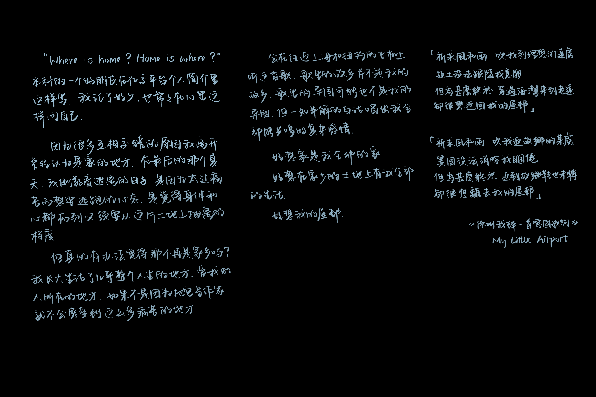
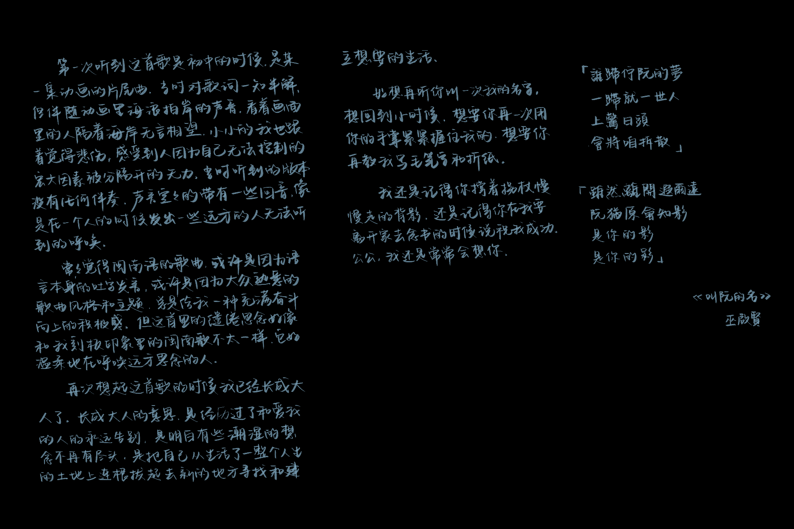

this is a journey about music, languages, and memories...
... a poetic experience where you would discover cherished songs, stories, and emotions
please use headphones for a better viewing experience

move around
navigate / select


Honestly, she's not the gentlest person I've known. She's a resilient woman who keeps her vulnerabilities hidden. At times, she can even be a bit fiery.